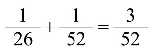
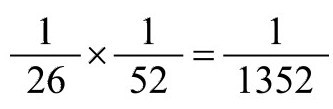
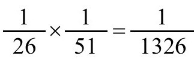
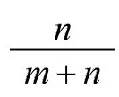
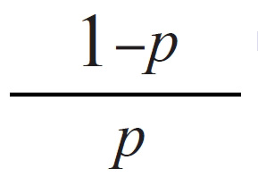
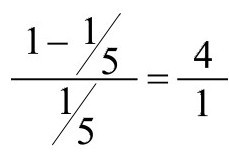

——卡尔·古斯塔夫·荣格[35]
特别令人震惊的巧合故事总是以这个问题结尾：“这个可能性有多大？”这通常是一个无需回答的反问句，因为这绝不是一个可以照字面意思回答的简单问题。尽管我们有一些研究巧合的统计技术和好的实验模型，数学家们目前仍没有一个适合巧合的理论。问题在于这个词本身的定义，毕竟巧合暗指无明显原因的意外事件，包含侥幸和奇迹。如果没有奇迹的希望和荣耀，我们会怎样呢？因此或许测量巧合的概率本身就是矛盾的。我们怎么能知道无明显原因发生的事件的概率呢？可能有人认为，除了决定骰子运行方向的上百个难以测量的变量之外，一对骰子掷出两个六点朝上的情况没有明显的原因，但我们能计算出这一结果的赔率为35:1。我们可以精确地计算出一个人活过某岁的概率。那么是什么阻挡我们计算奇迹或噩梦成真的概率呢？我们在测量概率时不总是都需要了解事件的原因。我们通过数据处理计算得出某人得癌症的概率，从而得知吸烟导致癌症，但在此之前我们并不知道为什么吸烟导致癌症。这件事发生在第二次世界大战之后，当时战前不吸烟的女战士参军后开始吸烟。她们的癌症率上升，然后死亡。我们猜测到之间的相关性，将各点联系起来了解到了其中的关联。很多巧合的问题在于变量太多，无法从统计样本中真正了解或推断出来。巧合通过定量分析难以解释，但辅以定性推理表明它们比我们想象的更常见。连心理学研究都避开定量预测而偏爱定性方法。我们谈到巧合就会联想到可能性。讲述一个巧合故事必然会有人问：“这个可能性有多大？”答案往往都是“很小很小”之类的话语。从事概率论研究的人应该告诉我们“很小很小”的意思，或至少他们要想想这是什么意思。一件事情的可能性有多大需用数字表达，数学家们称之为“概率”。概率介于0到1之间，0表示不可能，1表示绝对肯定。测量方法有多种。其中一种是从大样本中观察它的相对频率。一般而言，事件的概率是两数之比，数值由观测到的事件重复次数占大样本比例决定。如果实验次数越多，事件的相对频率越接近事件概率。第二种概率测量方法指计算逻辑可能性：向空中投掷骰子，骰子六面的任何一面都有可能朝上。我们不需投掷骰子也知道偶数朝上的概率是1/2。
如果两件事情由于逻辑关系不可能同时发生——如一次从一副52张扑克牌中抽取到红色的K和黑桃K——那么其中任一事情发生的概率为两件事情的概率之和。换句话说，抽取红色的K或黑桃K的概率为

。大致原理如下：假设X为事件的结果，P（X）则为事件实际发生的概率。事件未发生的概率为1-P（X）。例如，如果你在抛硬币，P（正面朝上）为1/2，P（正面朝下）也是1/2。如果你在抛一对骰子，那么P（4）=1/12，而P（非4）=11/12。如果X和Y是相互独立的可能结果，即一个事件的发生不会影响另一个事件，那么X和Y发生的概率为P（X）和P（Y）之积，而X或Y发生的概率为P（X）和P（Y）之和。
以人类的巧合事件为例，假设下周二上午你在太平洋的博拉博拉岛意外碰到你最好的朋友，同一天下午你在冰岛的雷克雅维克意外碰到你堂兄弟。第一个事件对第二个事件有影响。如果你不乘坐F-15单座战斗机，你不可能下周二上午在太平洋的博拉博拉岛意外碰到你最好的朋友，并且同一天下午又在冰岛的雷克雅维克意外碰到你堂兄弟。上面提到的扑克牌例子中——可能抽到红色的K，也可能抽到黑桃K。一方面，如果在一个事件完全独立于另一事件的情况下，两者发生的概率为两个单事件发生概率之积。如果先抽取红色的K，然后把红色的K放回去，再抽取黑桃K概率为

。实际上，要求指定的两者都必须发生降低了概率。另一方面，不还回去第一次抽出的牌，而从整副牌中抽取红色的K和黑桃K的概率计算会更复杂些。我们称在已发生的事件后即将发生的另一事件的概率为条件概率。从一副牌中抽取两张牌的例子给了我们启发。假设抽掉的牌没有还回去，那么抽取红色的K之后再抽取黑桃K的概率为
。第二次抽取时，整副牌中少了一张红色的K，因此需减去一张牌。因此第二次抽取黑桃K的概率则是从51张牌中抽取的概率。如果没有还回去红色的K，抽取黑桃K的可能性会上升。重要的是我们面对的是两个小于1的数字之积，这意味着最后计算出的概率将比任一事件的概率都小。再把事件弄复杂一点，我们规定黑桃K要比红色的K先抽取出来。如果我们要求任一牌的抽取概率——先抽或后抽黑桃K——将变大。我们将考虑两者概率：先抽取黑桃K再抽取红色的K的概率，和先抽取红色的K再抽取黑桃K的概率。赔率和概率的区别
接下来我们将区分赔率和概率。当我们说赔率为m比n，意指我们希望每发生n次事件就有m次不发生该事件。标准表示法为：m：n，读成m比n。如果赔率为m：n，概率为

，因此赔率4:1转换为概率为1/5，如果要计算某件事成功概率为p的赔率，计算出
，简化为m/n。对该事件发生的赔率比为m：n。如果p=1/5，赔率计算公式为
，因此赔率为4:1。赔率概念来源于赌博。计算获胜要容易一些。以m：1的赔率下注1美元，将获得m美元（原始赌金包括在内）。成败机会相等或等额投注意味着1:1的赔率。本书将以n=1举例说明赔率问题。如果我们知道每一次成功中有m次失败，计算可能性或不可能性将容易一些。我们有时会使用“可能性为1/m”这一表达法，它意指m次试验中有一次成功的机会。例如，“从一副52张的牌中抽取黑桃A的可能性为1/52”，意为“从一副52张的牌中抽取黑桃A的赔率为51:1”。
通过试验计算概率
选取任何两件有可能发生的事件。如假设一只黑猫下周三将穿过你走过的小路。再假设某一天你从律师事务所收到一封挂号信，信中说你从未听说过的叔叔去世了，留给你一百万美元的遗产。考虑到你所住的街区附近黑猫的数量，假设第一个事件的概率为0.000001。考虑到你不认识的叔叔不是很多，第二种事件发生的概率为0.000001。（为了便于讲解我将概率放大了。）两个事件都发生的概率非常小，只有0.000000000001。这个概率比其中任一事件发生的概率小，但比这两件事情同时发生的概率要大。当然其中一个事件发生的概率更大。
现在思考以下10个罕见的事件：
1.一只黑猫在某个周三穿过你走过的小路；
2.你从未听说过的叔叔去世，留给你100万美元的遗产；
3.你20年前丢失的戒指出现在你所住街道的旧货甩卖摊上；
4.梦中遇见一个高大的黑衣人穿过拥挤的房间，梦境成真；
5.你买得克萨斯乐透彩票，两次中奖；
6.你在太平洋的博拉博拉岛碰巧遇到你的亲兄弟；
7.在国外一家书店，你发现一本马克·吐温的《神秘的陌生人》，扉页上写有你的名字；
8.你去更新护照，发现新护照号码和你的社会保险号码一样；
9.在公园凳子上，你发现一本你少年时的马克·吐温的《神秘的陌生人》（没错，和故事7非常相似）；
10.你在芝加哥打出租车，发现司机和你一年前在纽约坐的出租车的司机是同一人。
这些故事是我随意挑选的。有些是巧合，有些只是单一的事件。如果不是因为太平洋上那只爱管闲事的蝴蝶——它似乎对任何事情都产生影响，从巴黎的天气，到美国肯塔基赛马结果——它似乎经常引发一些意外的麻烦，以上这些故事都可以是完全独立的事件。那只黑猫为什么刚好在那个特定的时间出现呢？那个高大的黑衣人或许正好是找到你遗失已久的戒指的人，这枚戒指正好是由这只黑猫给他的。
事情这样或那样发生的概率很难知道——即使是大致知道。简便起见，假设每个事件发生的概率为0.000001，这个概率低于单次发牌中拿到皇家同花顺的概率。除了告诉我们这个事件不是不可能，但可能性不大之外，这个概率数字没有什么特别的意义。因为当计算两者之一发生的概率时是两者概率相加，所以似乎两者之一的概率为2×0.000001=0.000002。你可能会天真地认为两个事件的概率加倍。但我们必须小心谨慎。这个计算忽略了两者可能会相互依赖这一情况（如上述事件7和9）。因此我们必须减去两者都发生的概率：0.000001×0.000001=0.000000000001，这个数字较小。实际概率为0.000001999999，比两倍稍小一点。这引出一个奇怪的问题。这个结果可能使我们改变看待巧合事件的角度。在充满着各种意外事件的世界里，一年中你可能会遇到数千件——或许数百万件，或数十亿件巧合事件。假设每百万事件中发生一件的概率为0.000001。现在问题是：如果我们将所有这些事件分组，计算至少一个事件在一年内的发生概率，将会发生什么呢？我们没有切实可行的办法确定一百万事件的独立性。我们无法假定任何两者之间没有任何直接联系。我们无法忽略一个事件可能导致或影响另一事件这一可能性，或者某单一事件可能取决于另一事件。例如，如果你彩票中奖一次，你可能会用部分奖金再去买彩票，再次赢取决于第一次赢。因此我们不能简单地将两次的概率相加获得一百万次中单次发生的概率。这样就会出现荒谬的结果，即单次发生的概率为：1000000×0.000001=1，百分之百发生！（将0.000001相加100万次。）要使计算有效，事件间应断开联系，彼此之间没有共同之处。如果这样，概率的测量将非常复杂，耗尽精力，或者不可能。例如，黑猫下周三或许经过你走过的小路，在下水道找到你遗失很久的戒指，并将它送给高大的黑衣人，黑衣人在旧货市场上将之标价出售。我们要消除这些事件之间的联系。但即使满足了这所有的要求，我们仍旧需解释大量使赔率降低的可能性。另一方面，如果这数百万计的事件之间相互独立，数学将会告诉我们，可以肯定其中有一个事件会发生。当然！任何活跃积极的人都会遇到数百万计事件中的一件发生。只要离开这个屋子，任何人都会有无数的可能性。
我们的清单上唯有事件5有精确的发生概率，而这还取决于获胜者的性格。要赢得两次，首先需要赢得第一次。这意味着第一次需要挑选6个正确的数字。这样一次性的概率约为0.000000038，这确实是很小的概率[36]。另一种方法是你有25827164:1的赔率赢。
这是如何计算得来的呢？挑选一个数字有54种可能性。第一个数字选好后不能更换新的，因此第二个数字有53种可能性。依此类推，第三个数字有52种可能性，第四个51，第五个50，第六个49。这样，6个数字从1到54，共有54×53×52×51×50×49=18595558800种不同可能性。6个数字共有1×2×3×4×5×6种不同的排列。由于6个数字排列的顺序没有影响，我们将18595558800除以720，获得25827165个不同的6位排列数，其中只有一个是正确的。
赢第二次的概率计算过程相同；彩票数字和概率都没有记忆。但是概率取决于我们的思维方式。如果你忘记了你曾经赢过一次，那么概率将不会出现变化。你的赔率仍为25827164:1，概率为0.000000038。赢两次的概率为0.000000038×0.000000038=0.000000000000001444，表明赢两次极不可能。我们知道彩票中奖号码不会重复。但是奇怪的是，根据中奖者的性格，重复中奖是可能的。正如罪犯回到犯罪现场，中奖者返回到中彩票的地方，投入更多的钱继续买入更多的彩票。我们的计算忽略了买彩票中所有其他的尝试。中奖者可能在再次中奖前已尝试过100次。在第7章（表7.1），我们发现买彩票每尝试4次就有4次中奖的概率很低。这很难做到。